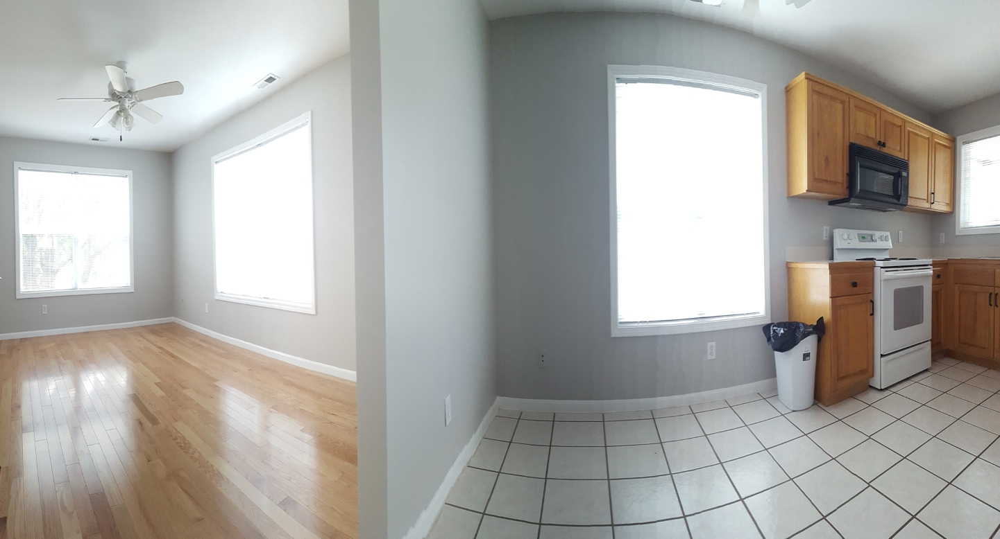
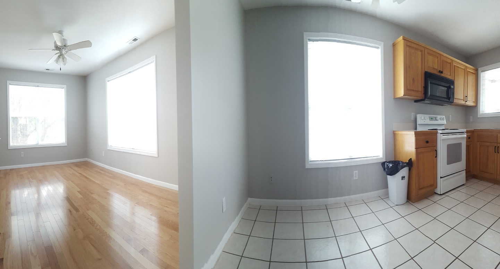

I am a front end developer who is also an accomplished musician, recording engineer, and builder. I love building things, be it with my hands or with code, so this website was made to showcase the creative activities that I find engaging. Continue browsing my site to learn more.
I built this site using HTML CSS and JavaScript. I simplified a template that looked ideal for expressing my ideas. I did not use everything from the original template, so I minimized the resources and hosted as much as possible locally. I consolidated the stylesheets and scripts, and then removed any unused HTML and CSS code. All of this was done to optimize the performance of the website, and make things easier for anyone else who reads the code. I did this using chrome developer tools and another tool called purgeCSS/node.js.
I have worked on a variety of construction projects, and learned many trades along the way. I worked directly with clients, and subcontracted from other businesses. While a lot jobs were small and required only an extra hand at most, other jobs required an entire crew. Follow the webpage link below for more pictures and details about projects that I worked on.
 

Music performance, production, and engineering are my favorite hobbies. I have spent a lot of my life playing in local bands and hanging out in recording studios with friends. It started 20 years ago when I was a teenager. I continue to dabble in these activities because I find it interesting and there's always new things to learn. I also contributed a lot to building an awesome DIY home recording studio, follow the link below for more info.